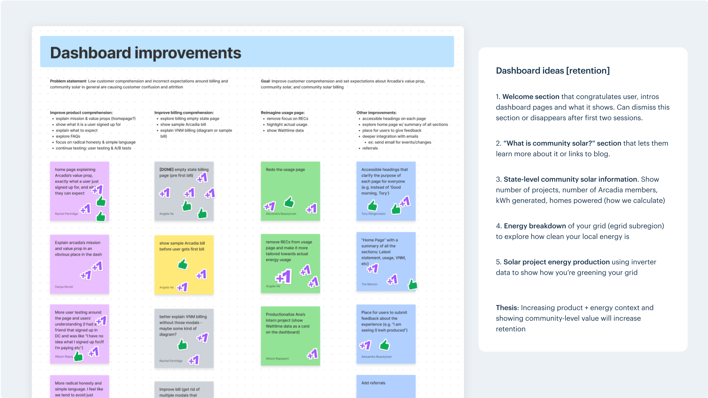
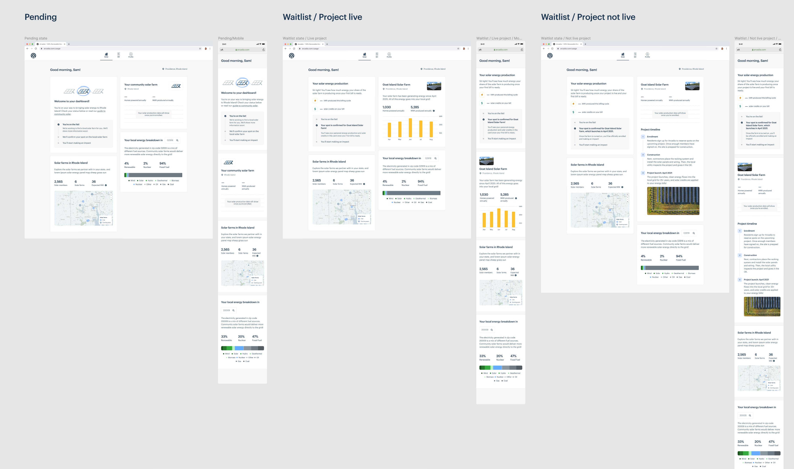

|
Arcadia — Solar Dashboard I led the redesign of the community solar dashboard experience, guiding customers through the steps of joining a local, remote solar project. 
Overview Community solar is a program that allows renters and homeowners to subscribe to remote solar projects by redirecting their energy bills towards the upkeep of a local solar project. In return, the solar energy produced by the project is sold back to the grid, and subscribers receive a discount on their energy bill for helping produce clean energy. It's a win-win-win situation. Goals The existing solar page in the dashboard lacked information, didn't clarify next steps, and sorely needed a refresh. We knew that customers were dropping from their community solar projects because of misaligned expectations around what they had signed up for. Wireframes and user testing We wanted to make the dashboard more modular and flexible, and we had a lot of ideas on new modules to add, such as a welcome module, community solar overview card, project updates, state-level energy module, etc. I created initial sketches and low fidelity wireframes with these ideas in mind to visualize the various ways to display community-level impact and product explanations.
 Sketches and inspiration  Early designs for a pre-enrolled and enrolled views After multiple rounds of stakeholder feedback and design critiques, I refined which modules to show and created a version of the solar page for each step of joining a solar project, from being pending as Arcadia determines a customer's project eligibility, to being on a project waitlist as the project is being constructed, to finally being enrolled and receiving solar credits.
 Pending and waitlist stages of joining a solar project  User testing brief & script Final designs User testing revealed that overall, the designs had high comprehension around the process of joining a community solar project, and some improvements were made to clarify project timelines and how billing worked. The final designs focused on clearly explaining the next steps of joining a solar project, along with visualizations of the renewable impact that the solar projects added to a customer’s local power grid.  Pending on a solar project  On a waitlist for a solar project  Enrolled on a solar project Impact and aftermath The designs were built and released iteratively, starting with the pending view first. Our data analytic partners are working to measure how customers are interacting with this pages. This improved dashboard has allowed us to build iterative features on top of the baseline solar experience, such as our advocacy tool. |
I’m a product designer who has worked on customer-facing web apps, internal tools, and media products. I'm excited about tech & design for social and sustainable impact.
Currently a senior product designer at Arcadia 🌱